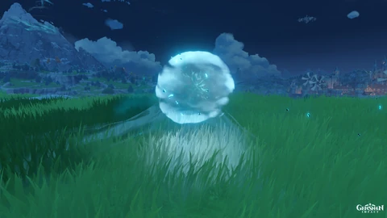

Teyvat & Unknown · Hidden Lore
Ley Line
Ley Lines carry elemental energy and record memories. Recent quests reveal their ancient role, regional changes, and effects of the Hallowing.

A network of energy and recorded memory
Ley Lines run through Teyvat and carry elemental energy. In-game descriptions also say that memories and information are recorded in them. People encounter visible signs of the system as Ley Line Outcrops and Blossoms, Domain Disorders, and other places where its power reaches the surface.
Domains connect Ley-Line flow with Irminsul through their Petrified Trees. These links do not make the Ley Lines and Irminsul the same thing: the story describes related systems with distinct roles, and gameplay features alone do not explain their full history.
An older network repurposed
Song of the Welkin Moon: Act IX places Irminsul and the Ley Lines in the age of the dragons, before the Heavenly Principles arrived. Apep recalls the lines carrying a primitive elemental power known as the Light Realm. Later dialogue says the Heavenly Principles divided that power into the elements and repurposed Irminsul as a record of the world; the Ley Lines also became a protective girdle and part of the order that anchors fate.
This account describes a change to an older system, not proof that every rule of fate, every curse, or the distribution of Visions is itself a Ley-Line process. The story has not named who first made the network or fully explained how its parts relate to Irminsul.
When a disturbance exposes memories
In Caribert, the Abyss Order tampers with the Ley Lines in Avidya Forest. The Traveler is overwhelmed and experiences memories from the twin’s past with Chlothar and Caribert. Dainsleif identifies the network as disturbed and says information and memories flow through it.
The quest presents a witness to a recorded memory, not ordinary travel into the past. It also does not establish that anyone can deliberately browse all Ley-Line records or that every memory disturbance works in the same way.
Natlan’s separate network
Natlan’s Ley Lines were destroyed in the ancient war. Yohualtecuhtli, the Lord of the Night, used their remnants to build the Night Kingdom with Ronova’s guidance. The substitute has rules of its own and was not connected to the rest of the Ley-Line cycle, which helps explain why Natlan’s memories and protection could not simply be shared everywhere.
After the Abyss invasion, Capitano gave his life force to strengthen the weakened network and rewrite its rules. The story ties that change to the souls he carried and to allowing people from outside Natlan to be accepted into the Night Kingdom when they die there. This is a specific regional repair, not evidence that the world’s entire network was rewritten.
Aaru after Irminsul’s destruction
In Song of the Welkin Moon: Act X, Sumeru’s scholars modify Aaru as part of a last-resort plan for Irminsul. After Nahida burns the corrupted tree, Aaru shoulders responsibilities that once belonged to Irminsul, and Nicole transfers Nahida’s connection to it.
The quest establishes this as a major preservation measure, but it does not say that Aaru has become a second Irminsul in every respect or that all of Teyvat’s Ley Lines were replaced. Keep this local intervention distinct from Natlan’s Night Kingdom.
The Loom of Fate can add Ley Lines
Bedtime Story reveals that the completed Loom of Fate can weave real Ley Lines. The same dialogue sets a limit: new lines cannot replace or extend the ones already in existence. The device therefore adds a network rather than overwriting Teyvat’s established one.
In A Space and Time for You, the twin’s Atlas of the New World holds the newly woven Ley Lines associated with New Khaenri’ah in the Night Kingdom. The plan does not show Khaenri’ah physically restored in the ordinary world, and its further outcome remains unknown.
Ley Lines, death, and Snezhnaya
In Chapter VII: Act II, Ronova explains that a person’s soul must return to the Ley Lines for death to be complete. She says angels once altered the lines beneath the snowbound theater to accommodate the souls of special creations; that change also reduced their capacity to receive ordinary souls. The Traveler is a specific exception in this scene, and the dialogue does not establish that every Descender is treated identically.
A separate Snezhnayan account says the Cryo Dragon Sovereign’s remains once turned local Ley Lines into crystal veins. The game has not confirmed whether those lines recovered. These local alterations show that the network can be damaged or modified without explaining a single universal mechanism for every case.
The Hallowing and the Version 7.2 reset
Chapter VII: Act VI connects the Hallowing to a Ley Line reset. Valeriy says that aberrations accumulated in the network are pouring out; in Dragonspine, Venti links some anguished voices and monsters to information leaking from the lines as the Skyfrost Nail attempts to reset the world. He thinks the voices may belong to people of Sal Vindagnyr, so that identification remains tentative.
The same crisis affects Natlan’s disconnected system: Natlanese outside the country begin to lose memories as the Wayob fall silent, while the Night Kingdom is corroded. The Hallowing has stopped spreading for now, but the story explicitly leaves its danger and the reset’s lasting effects unresolved.
What remains unknown
The quests do not identify who created the pre-Heavenly Principles network, explain the complete relation between Ley Lines and Irminsul, or show what the Version 7.2 reset ultimately leaves behind. The Traveler’s account that the Pyro Gnosis returned to the lines is not a confirmed final location: the Tsaritsa expects it may later be removed, and it remains unlocated.
Treat theories that make the Ley Lines a complete operating system for Teyvat’s rules as theories. The confirmed examples show memory records, elemental flow, protection, and several regional changes, but the game has not said that every supernatural rule runs through the network.
This is an original CoreGG reading guide, not an official HoYoverse article or a reproduction of the game text. Source links below identify the records used so you can check the original context.
Sources & references
Check these sources for the original game text and reference trail.
- Genshin Impact Wiki · lore reference
- Teyvatica · Ley Lines, source-linked lore overview (current through Version 7.2)
- Caribert · full in-game dialogue transcript
- As All Falls to Emptiness · full in-game dialogue transcript
- Of Myriad Paths, Flux, and Dissolution · full in-game dialogue transcript
- Incandescent Ode of Resurrection · full in-game dialogue transcript
- A Space and Time for You · full in-game dialogue transcript
- Her Palace Collapses Into the Blizzard · World Quest recap
- White Night, Like a Dream Upon Waking · full in-game dialogue transcript
- A Yesterday Sent From Beyond · full in-game dialogue transcript